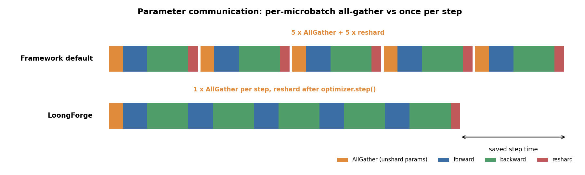
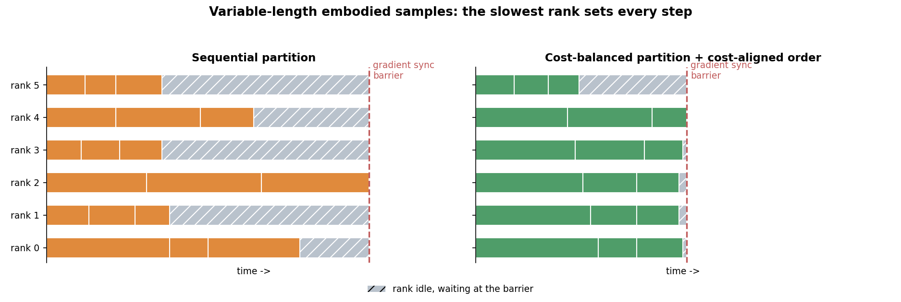
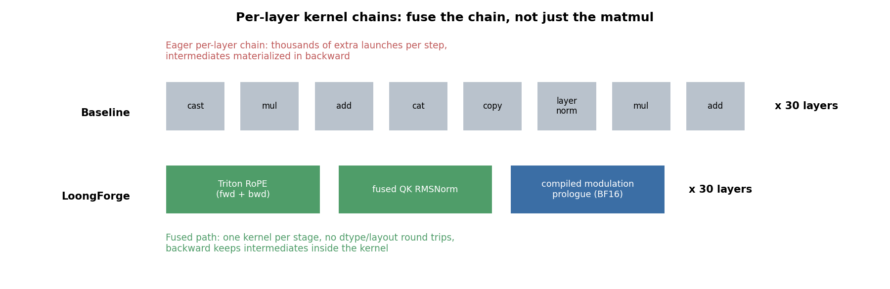
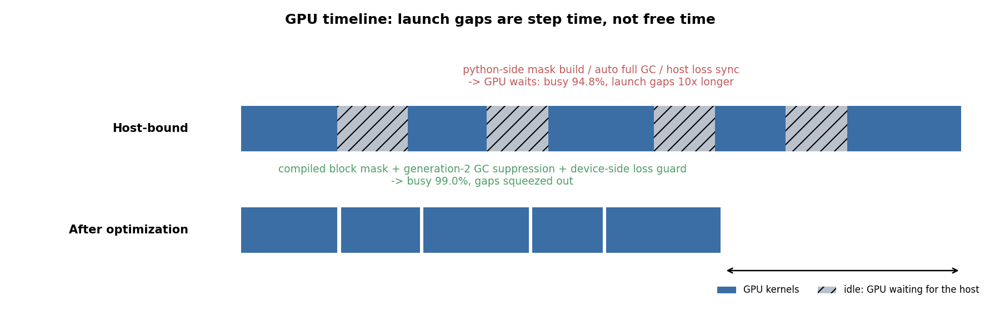
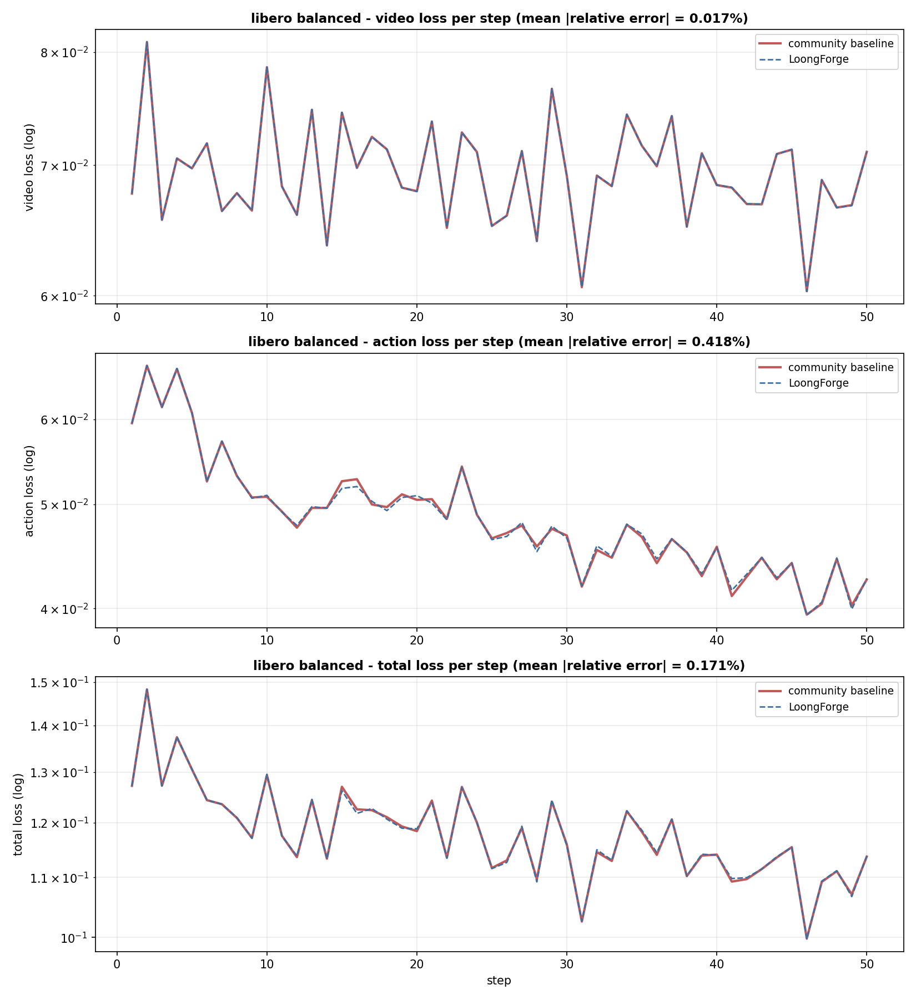

Accelerating LingBot-VA Training: A Technical Walkthrough
LingBot-VA is an embodied-AI model that jointly models video and action. Its training suffers from redundant parameter communication, unbalanced load from variable-length samples, per-layer chains of small kernels that slow the backward pass, and GPUs that frequently wait on CPU scheduling. LoongForge applies system-level optimization across the whole training path and achieves 2.20x training throughput and a 54.5% shorter step time.
1. Background: new training challenges from joint video-action modeling
In embodied AI, models that jointly model a "video-generation backbone + action branch" (WAM-style models) are quickly becoming mainstream. Instead of simply chaining a vision encoder and an action head, they predict both how the scene will evolve and how the robot should act, grounding control in an understanding of physical dynamics. This markedly improves long-horizon task success and sample efficiency. LingBot-VA is a representative example: it uses a large pretrained video diffusion model as its backbone, interleaves video latents and action tokens into one unified sequence, and performs autoregressive flow-matching generation. It reports leading success rates on simulation benchmarks such as RoboTwin 2.0 and LIBERO.
But this architecture puts very different pressure on the training system than a conventional VLA does:
- Sequences are inherently variable in length. The number of video latent frames and the length of the action chunk vary per sample, so token counts within one batch can differ by several times. With multi-GPU data parallelism, each step takes as long as the slowest GPU.
- Per-layer small kernels are dense. In each of the 30 Transformer blocks, a chain of lightweight operations runs: time modulation, QK normalization, rotary position embedding, and residual gating. Each kernel is short, but multiplied by the layer count and the number of gradient-accumulation microbatches, kernel launches and intermediate-tensor traffic alone consume a lot of time.
- Gradient accumulation amplifies communication. To build a large effective batch under limited memory, this kind of training commonly uses many gradient-accumulation steps. Under parameter sharding (FSDP), the default implementation all-gathers the parameters again for every microbatch, so communication volume scales directly with the number of microbatches.
- Attention is sparse and masked. Once video tokens and action tokens are interleaved, attention needs masks built from chunks and sliding windows. Building them is a CPU-heavy graph-structured computation and easily becomes a host-side bottleneck.
The net effect: when training with the community open-source implementation, the GPU spends a large share of its time not computing but waiting for communication, waiting for masks, and waiting for the slowest GPU.
2. Overview: start from "what is the GPU waiting for?"
To improve LingBot-VA training efficiency, the Baidu Baige team restructured its training path at the system level on LoongForge, our open-source omni-modal training framework. We did not start by "swapping in a faster kernel". We started by using profiling to answer one question: where does the time in a step actually go?
Based on NSys timelines and NVTX ranges, we split step time into three kinds of waste that can be optimized independently:
- Communication waste: the same parameters are all-gathered repeatedly within one step, and gradient reduction uses needlessly high precision.
- Scheduling waste: many visible launch gaps appear between GPU kernels, where the GPU waits for Python-side mask construction, for automatic garbage collection, and for the loss to be synchronized back to the host.
- Operator waste: per-layer chains of small kernels produce many kernel launches and dtype/layout round trips, and the backward pass has to materialize extra intermediate tensors.
On top of these comes a load problem tied directly to the model: rank stragglers caused by variable-length samples.
Along these four directions, with the same model structure, data, and hyperparameters, LoongForge raises training throughput to 2.20x that of the community open-source implementation. The key techniques behind this follow.
3. Under the hood: four engineering optimizations behind the 2.2x
Optimization 1: FSDP parameter communication — from one all-gather per microbatch to one per step
The default semantics of sharded-parameter training are: all-gather the full parameters before forward, reshard immediately after use to free memory, and all-gather again for backward. This is reasonable with a single microbatch, but it degrades under gradient accumulation: every microbatch in a step repeats "all-gather → compute → reshard", even though all of them use exactly the same parameters.
LoongForge postpones resharding from "after every forward/backward" to "after the optimizer update". When wrapping with FSDP, we turn off reshard_after_forward so the parameters stay unsharded for the whole step and are reused by every microbatch. We also register a step post-hook on the optimizer so that, once the parameter update is done, everything is resharded in one go and the memory is returned. The number of parameter all-gathers per step drops from "number of microbatches × 2 (one each for forward and backward)" to 1.

An ablation quantifies this item: turning the optimization off increases step time by 21.16%. It also explains why the gain scales linearly with the number of gradient-accumulation steps: the more steps, the more repeated communication is saved.
A companion change concerns gradient-reduction precision. We align reduce_dtype in the FSDP mixed-precision policy with the parameter precision (BF16), which removes the precision conversions around reduce-scatter and the larger communication payload. This alone is worth about 2%, and it matches the community implementation exactly under the accuracy gate.
Optimization 2: load balancing for variable-length samples — cost-balanced sampling and microbatch alignment
Sample lengths in embodied data are naturally uneven. The default distributed sampler slices samples to ranks in index order, so some ranks get a batch of long samples and others a batch of short ones. Because gradient synchronization is a global barrier, each step takes as long as the slowest rank, and all the time saved by the short-sample ranks turns into idle waiting.
LoongForge implements a cost-balanced distributed sampler:
- The gradient-accumulation step count is used as the grouping unit, so the balancing granularity exactly covers all the samples consumed by one parameter update;
- Within a group, samples are sorted by cost (estimated from sequence length and similar factors) in descending order and then placed greedily on the rank with the lowest accumulated cost, making the total cost of each rank as close as possible;
- After assignment, the microbatch order inside each rank is cost-aligned, so that at the same microbatch index every rank processes samples of a similar magnitude. This avoids per-microbatch jitter where some GPUs are on long samples while others are on short ones at the same moment.

The effect is again verified with end-to-end time: with cost-balanced sampling on, step time drops by 7.4% (a 1.079x speedup). This gain changes no operator implementation and comes purely from data orchestration, which is exactly the part that operator-only optimization cannot reach.
Note that balancing changes the sample-to-rank mapping, so we must prove that it does not change training semantics. For this we built a SHA256 gate on sample order: we export the actual sampling order of every rank in every epoch and check it file by file against an archived baseline; if any single file differs, the gate fails.
Optimization 3: per-layer kernel-chain fusion — hand-written Triton RoPE, fused QK RMSNorm, compiled modulation prologue
The "small operations" inside the 30 blocks are the easiest cost to overlook. Each takes only a few microseconds, but it runs in every layer, for every microbatch, and leaves a trail of intermediate tensors in backward. LoongForge does three things here:
A hand-written Triton RoPE kernel. In eager mode, rotary position embedding expands into a chain of mul / add / cat / copy kernels, once for Q and once for K. We use a single Triton kernel to rotate Q and K pairwise at the same time, and we implement the backward ourselves: the backward rotation shares the same kernel as the forward and just negates the rotation direction, so no extra intermediate tensors need to be saved and the operator chain does not have to be rebuilt in backward. The cos/sin components are cached by shape and reused. In the ablation, turning this group off raises total elementwise time to 1.76x, adds about 5,100 kernels per step, and increases step time by 7.29%. About 98% of the gain comes from backward, which is exactly where writing our own backward pays off.
A fused QK RMSNorm. If Q/K normalization uses the framework's native implementation, it adds extra contiguous copies and dtype conversions before and after attention. We switch to TransformerEngine's fused RMSNorm. In the ablation, turning it off increases end-to-end step time by 6.46%, which confirms its value.
A compiled per-layer modulation prologue with a fixed BF16 compute domain. The per-layer time modulation (shift / scale / gate) plus LayerNorm is a typical memory-bound short chain. We treat it as one compilation unit so the compiler performs modulation and normalization in a single kernel, and we keep the intermediate expressions inside the block in BF16 with no up- and down-casting. Turning off the compiled prologue increases step time by 7.78% and raises total elementwise time to 1.9x; fixing the BF16 compute domain adds a further gain of about 1.4%.

Optimization 4: rescuing the GPU from "waiting for the host" — mask compilation and GC suppression
The first three items all reduce the work the GPU has to do. But profiling exposed another kind of waste: the GPU has work to do and yet sits idle waiting for the host.
The criterion is three structural NSys metrics: the share of GPU busy time, GPU idle time, and the total length of the "visible gaps of at least 10 microseconds" between kernels. If a change leaves the kernel count and per-category kernel time almost unchanged, but idle time and large gaps rise significantly together, it is a host-side bottleneck. Such a bottleneck cannot be fixed by optimizing operators; the host-side computation has to be moved off the critical path.

Using this criterion, we mainly located and fixed two kinds of host-side bottleneck:
- Attention mask construction. The sparse attention over the interleaved sequence needs a block mask built at every step, which is a Python-side graph-structured computation. Without compilation it directly blocks forward kernel submission: GPU busy falls from 99.0% to 94.8%, GPU idle grows to 5.6x, and gaps of at least 10 microseconds grow to 10.4x. Moreover, the increase in idle time almost exactly equals the increase in large gaps, millisecond for millisecond, which is the textbook signature of a GPU waiting on the host. We compile the mask construction and cache it by shape and window parameters (falling back to eager automatically if compilation fails, for robustness), taking this host computation off the critical path for a per-step gain of 3.89%.
- Python automatic garbage collection. The training loop creates many short-lived objects. Once Python's generation-2 full GC triggers, the host has a window in which it cannot submit CUDA work. Worse, the trigger times differ across ranks, so the window is amplified through collective communication. Our strategy is not to simply disable GC: we keep the generation-0/1 young-generation collections, suppress the generation-2 threshold, and explicitly trigger one controlled full GC at a fixed step interval. The ablation shows that when this strategy is reverted, the kernel count is exactly unchanged (identical kernel by kernel), yet GPU idle grows to 2.4x and step time increases by 1.98%. The GPU compute graph is exactly the same, so the loss comes purely from host stalls.
4. Measured performance
We tested LingBot-VA with default training parameters (gradient accumulation = 10) on the LIBERO dataset, on Baidu Baige hpas.lgn7ib instances. With identical model structure, data, and hyperparameters, LoongForge achieves 2.20x the training throughput of the community open-source implementation and a 54.5% shorter step time, while the training loss stays aligned with the community implementation (mean relative error 0.171%).

From the perspective of optimization mechanisms, the size of each contribution is also clear:
- Amplified communication count is the only mechanism that yields a single-item gain above 20%, and the gain scales linearly with the number of gradient-accumulation steps;
- Per-layer kernel-chain fusion (modulation prologue, Triton RoPE, fused QK RMSNorm) is worth 6%–8% each;
- Cost-balanced sampling for variable-length samples contributes about 8% and does not depend on any operator change;
- Host-side idle cleanup (mask compilation, GC strategy) totals about 6% and pushes GPU busy to 99.0%.
It is worth noting that once GPU busy reaches 99.0%, there is less than 1% left to gain on the host side. Further speedups must come from the kernels themselves (GEMM currently accounts for about 63.7% of kernel time) and from communication overlap. That is the direction of our next stage.
5. Summary: turning the GPU from "passively waiting" into "continuously computing"
Looking back over the whole effort, the 2.20x improvement comes from four paths of different nature: redesigning communication semantics (parameters reused within a step), load balancing through data orchestration (cost alignment of variable-length samples), hand-written and fused operators (Triton RoPE and per-layer chain fusion), and cleaning up the host-side critical path (mask compilation and the GC strategy). They address four kinds of waste, namely communication, load, compute, and scheduling, and dropping any one of them forfeits part of the gain.
What supports these conclusions is a methodology of "quantify the bottleneck first, design the optimization next, and accept it by ablation last": every conclusion comes from reproducible timeline evidence and item-by-item ablation, and every performance gain passes an accuracy gate that is aligned with the community implementation iteration by iteration.
All of these optimizations are now integrated into LoongForge, our omni-modal training framework. We welcome researchers and developers in embodied AI to explore more efficient VLA training together.